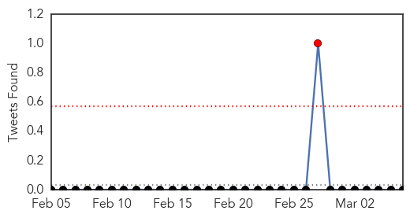
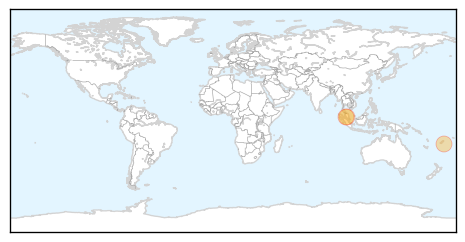
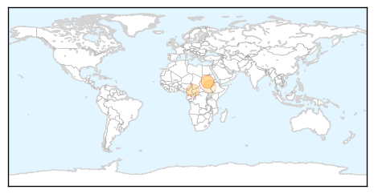
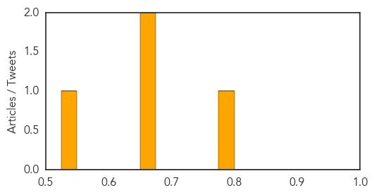

Dengue Fever
30-Day Web Trend
2 alerts, 0 warnings
30-Day Twitter Trend
2 alerts, 0 warnings

Article Locations
Article Confidences

Top Articles:
Top Tweets:
-
No tweets found for Mar 06, 2014
Cholera
30-Day Web Trend
0 alerts, 0 warnings
30-Day Twitter Trend
1 alerts, 0 warnings
Article Locations
Article Confidences
Top Articles:
- 0.789
- Central African Republic: Drinking water restored to over 183,000 people ahead of the rainy season
- 0.671
- Medair resumes Malakal relief activities, works actively in several South Sudan crises areas - South Sudan
- 0.668
- Medair resumes Malakal relief activities, works actively in several South Sudan crises areas.
- 0.529
- A Health Project in South Sudan is Helping Provide Critical Services for Women and Children in the Midst of Conflict - South Sudan
Top Tweets:
- 0.588
- RT: Namibia: as of 3 March 2014, 39 cholera cases and 3 deaths have been reported in Katutura, Windhoek http://t.co/Xp1NA9DnR3